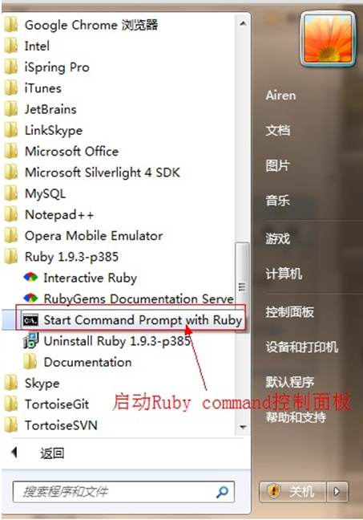

sass笔记
就是一种预处理器语言，增加编程的特性，提供简介、高效的方法。
sass无法兼容已有的css，就是sass可以编译车css，但是css不能反编译成sass，这他妈就尴尬了！这就深刻诠释了放出去的屁和泼出去的水！
sass和scss其实是同样的叫法，只是sass的写法严格按照ruby的空格符，没有大括号和分号。scss就是按照平时css的写法，只是引入了编程的思想。能使用变量，函数和公式！ 相对而言我还是喜欢scss的写法风格！因为我的小拇指就是在分号键上！每次写完都习惯按一下！
安装ruby：http://rubyinstaller.org/downloads按自己电脑的系统安装对应的版本，也就是32位和64位。需要注意的是个人建议默认安装到C盘，安装到第二步的时候有个选择安装，选择第二个，（不选中，就会出现编译时找不到Ruby环境的情况）他是把Ruby设置到全局变量Path上面。在任何盘都可以使用！有点像eclipse的环境配置
Ruby安装完成后，在开始菜单中找到ruby，然后点击command控制面板，会打开cmd命令。在里面安装sass，（其实这段我最开始没注意直接用cmd安装的，完了之后再回过头才看见。感觉没什么区别！）
window:直接输入：gem install sass 等个3分钟自己下载
Mac：输入：sudo gem install sass 不晓得为什么加了sudo感觉就是“去做的意思”
如果下载不了，去rubygmes官网吧sass安装包下载下来。输入 gem install "下载解压下来的sass路径"，mac直接拖进来就有路径，windwo的老老实实写把，多动手没坏处。
更新sass为最新版本：gem update sass
卸载sass: gem uninstall sass
输入：sass --watch "scss的完整路径，我是打开文件夹粘贴复制的":"需要编译到的css路径，最好建个css文件夹"
例子：sass --watch sass/bootstrap.scss:css/bootstrap.css
koala
compass.app
scout
codekit
基于node.js的自动任务运行器，自动化完成js、coffee、sass、less、html、images、css等文件的测试、检查、合并、压缩、格式化、浏览器自动刷新、部署文件生成，并监听文件在改动后重复指定的这些步骤
创建sass文件（千万不要创建后缀为sass问文件，要后缀为scss的文件，如果你不想难受！听说编码要设置为uft-8，日妈我到最后才找出这个问题，发现是这个，改了几次！然后就没耐心了！）
1.嵌套式输入方法：sass --watch test.css --style nested (就是正常css只是最后结尾的大括号没换行)
2.展开式输入方式：sass --watch test.css --style expanded (最后结尾大括号换行)
3.紧凑型输入方式：sass --watch test.css --style compact (全部在一行显示)
4.压缩式输出方式：sass --watch test.css --style compressed (压缩文件，或去掉空格和注释,我喜欢这种)
用$为开头声明变量。最开始我以为所有符号都可以，结果各种姿势调试，尼玛就是不对！最后是实践发现只能用$
所有用变量声明的属性值后面用！default ，说明为默认值。使用其他变量值可覆盖默认值。听说用的很多！估计就是权重的问题，覆盖个别样式
可以定义全局和局部变量，在标签里面声明变量值，就是为局部变量！